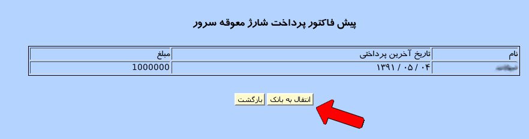

|
ابتدا باید آدرس مورد نظر را در قسمت نوار آدرس مرورگر خود وارد نموده تا صفحه ورود نمایش داده شود.
|

|
۱- نام کاربری خود را در این قسمت وارد نمایید.
۲- گذرواژه خود را در این قسمت وارد نمایید.
۳-کلید مربوط به خود را در این قسمت وارد نمایید.
۴-با کلیک بر روی دکمه ورود در صورت صحت اطلاعات وارد شده وارد نرم افزار خواهید شد.
۵-به کمک این لینک میهمانان می توانند صورت حساب خود را مشاهده نمایند.
پس از بررسی اطلاعات وارد شده وارد صفحه اصلی نرم افزار می شوید.
|

|
صفحه اصلی سامانه از سه قسمت اصلی تشکیل شده است:
۱-در این قسمت میزان بدهی برای شارژ ماهیانه سرور سامانه نمایش داده می شود.
۲-قسمت بعدی مربوط به نوار منو می باشد.
۱-پرونده:این منو امکان تعریف اطلاعات پایه در نرم افزار را به کاربر می دهد.
۲-حسابداری: این منو شامل امکاناتی برای تعریف حساب ها, عملیات مالی و ... می باشد.
۳-انبارداری: عملیات مربوط به ثبت, ورود, خروج و ... مربوط به انبار در این منو قابل دسترسی است.
۴-کاست: به کمک این منو دسترسی به سیستم قیمت تمام شده (کاست کنترل) مربوط به سامانه می توان شد.
۵-گزارش ها:تمامی گزارش های مورد نیاز کاربر از این منو قابل دسترسی می باشد.
۶-پشتیبان:عملیات پشتیبان گیری و بازگردانی اطلاعات پایگاه داده در این منو انجام می شود.
۷-کاربران:لیست کاربران آنلاین و لیست ورود و خورج کاربران در این منو قابل دسترسی می باشد.
۸-پذیرش:تمامی امکانات مربوط به پذیرش به کمک این منو قابل دسترسی می باشد.
۳-این پنل شامل امکانات حیاتی مورد نیاز کاربر است که برای سهولت استفاده در این قسمت قرار داده شده است.
۱-صندوق ها:تمامی صندوق های تعریف شده توسط کاربر با آیکن انتخابی کاربر.
۲-مدیریت کاربران:افزودن یا حذف کاربر توسط مدیر و یا تغییر نام کاربری و گذر واژه.
۳-مدیریت هتل:امکان تعریف و تغییر و پاک کردن هتل, امکانات هتل, سیستم رزرواسیون و ...
۴-گزارش اسناد: گزارش کاملی از سندهای ثبت شده.
۵-ثبت دریافتی/پرداختی:تمامی عملیات دریافت و پرداخت از حساب ها.
۶-ثبت ورود و خروج:ثبت ساعت ورود و خروج کاربر با وب کم.
۷-خروج:خروج از سامانه
|
پنل اول: میزان شارژ معوقه
|
|
در این پنل میزان بدهی مربوط به پرداخت شارژ سرور سامانه نمایش داده می شود و امکان پرداخت آنلاین مبلغ وجود دارد.
|

|
|
با کلیک بر روی دکمه پرداخت وارد صفحه پرداخت نقدی می شویم.
|
|

|
در این صفحه نام مشتری و تاریخ آخرین پرداختی و میزان بدهی آن نمایش داده می شود.
با کلیک بر روی دکمه انتقال به بانک وارد درگاه بانک شده و مبلغ مورد نظر وارد می شود.
|
پنل دوم: منو
|
|
در این پنل تمام امکانات نرم افزار در قالب منو در اختیار کاربر قرار داده شده است.
|
|
|
منوی پرونده شامل ۱۵ زیر منو می باشد:
۱-مدیریت دفاتر
۲-مدیریت آژانس
۳-مدیریت کاربران
۴-حضور و غیاب
۵-مدیریت هتل
۶-دسترسی هتل
۷-اطلاعات پذیرش
۸-ارتباط با پشتیبانی
۹-انتقاد و پیشنهاد به مدیر
۱۰-تعریف صندوق
۱۱-دسترسی فرانت آفیس
۱۲-موارد آفیس
۱۳-عملیات فرانت آفیس
۱۵-خروج
|
|
|
۱-مدیریت دفاتر
|
|
در قسمت مدیریت دفاتر کاربر می تواند یک یا چند دفتر را به دفاتر خود اضافه و یا حذف کند. همچنین در این پنل امکان ویرایش و انتخاب حساب نیز به کاربر داده می شود.
|
|
|
برای ثبت دفتر جدید از قسمت پایین پنل مدیریت دفاتر می توانید نام دفتر جدید, توضیحات برای دفتر,
امکان انتخاب رنگ مورد نظر برای نمایش دفتر در صفحه ی وضعیت هتل و میزان تخفیف داده شده به دفتر
مورد نظر را وارد نمایید سپس بر روی دکمه ثبت کلیک کنید. پس از ثبت دفتر می توانید از ستون حساب
کل, حساب کل تعریف شده برای دفتر و همچنین لازم به ذکر است که حساب معین به طور خودکار توسط نرم
افزار ایجاد می شود و در صورت نیاز می توانید آن را از ستون حساب معین صندوق با کلیک بر روی
لینک نمایش داده شده و ورود به صفحه انتخاب حساب تولید شده را به حساب مورد نظر برای دفتر تغییر دهید.
صفحه ی انتخاب حساب شامل دو لیست از حساب های کل تعریف شده و معین های این حساب ها می باشد.
برای انتخاب, ابتدا حساب کل سپس حساب معین مورد نظر را انتخاب و بر روی دکمه انتخاب کلیک نمایید.
|

|